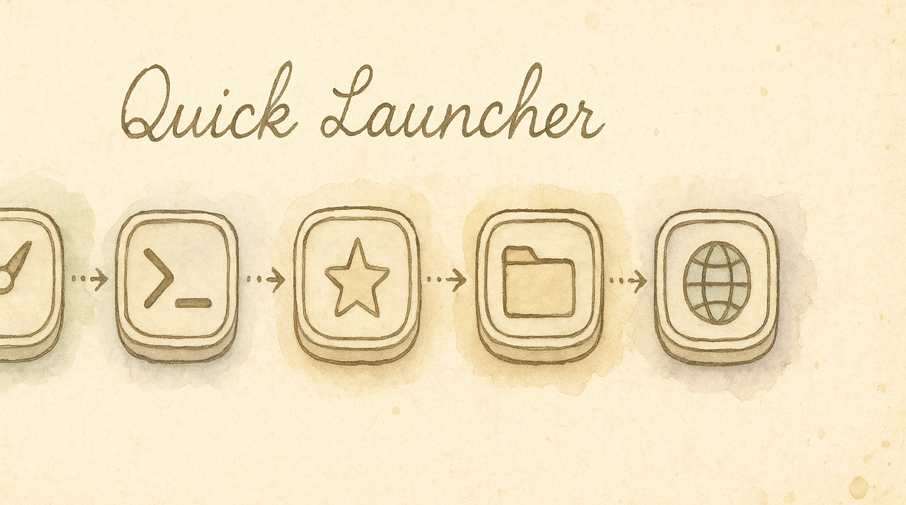

Launch Anything With One Keystroke
You're in the middle of typing and need to jump to Safari, or open a URL, or fire up Terminal. Normally that means reaching for the Dock, Spotlight, or a launcher app — breaking your flow. With the Quick Launcher, you hold one key and press a letter. App opens instantly. Hands never leave the keyboard.
What You Get
Enable the Quick Launcher pack and you get a dedicated launcher layer on your keyboard:
- Hold Hyper + press a letter → launch the assigned app, URL, folder, or script
- Visual overlay → the keyboard overlay shows app icons on mapped keys so you always know what's where
- Instant dismiss → release Hyper and you're back to typing
Default mappings ship ready to use: S = Safari, T = Terminal, F = Finder, G = GitHub. Customize from there.
Enabling It
- Open KeyPath and click the gear icon to open the inspector panel
- Go to the Rules tab
- Find Quick Launcher in the Productivity section
- Toggle it on
Hyper combines Control, Option, Command, and Shift into one modifier. Apps rarely use all four together, so Hyper creates clean shortcuts that are unlikely to conflict. Caps Lock Remap provides Hyper by default when you hold Caps Lock. If you haven't set up a Hyper key yet, KeyPath can offer to enable Caps Lock Remap when you turn on Quick Launcher. You can accept that one-click fix or continue and choose a different Hyper key later.
Hyper is different from Leader: Hyper acts like a modifier you hold or tap, while your Leader key starts KeyPath layers and sequences. Quick Launcher can use either Hyper or a Leader → L sequence; choose the activation mode in its settings.
See Make Rules Work Together for an explanation of requirement warnings and each available action.
How It Works
- Hold the Hyper key (default: hold Caps Lock)
- The overlay switches to show your launcher mappings — each key displays the icon of its assigned app or action
- Press a letter to launch that app/URL/folder
- Release Hyper — you're back to normal typing
Unmapped keys appear dimmed. The overlay disappears automatically after you launch something.
Configuring Your Launcher
Adding a mapping
- In the Quick Launcher pack detail view, click any empty key on the keyboard visualization
- Choose what to assign:
- App — pick from installed applications
- URL — enter a web address (opens in default browser)
- Folder — pick a folder to open in Finder
- Script — select a script to execute
- The key now shows the app icon on the overlay
Removing or changing a mapping
Click any mapped key in the visualization to reassign or clear it.
Activation modes
The Quick Launcher supports three trigger styles:
| Mode |
How it works |
| Hyper Hold (default) |
Hold Hyper key, press a letter, release Hyper |
| Hyper Tap |
Tap Hyper to toggle the launcher layer on/off, then press a letter |
| Leader → L |
Press your Leader key, then L, then press a letter |
Change the activation mode in the pack settings.
Tips
- Keys are suggested in home-row-first order for ergonomics — start with the home row and work outward
- You can map any letter (a–z), number (0–9), or punctuation key
- Add websites by entering their URLs manually; KeyPath does not read browser history
- Quick Launcher works alongside all other KeyPath features — your home row mods, app-specific rules, and tap-hold keys all coexist
Troubleshooting
Nothing happens when I press Hyper + a key
- Verify the Quick Launcher pack is enabled (check the Rules tab)
- Verify your Hyper key is working — the overlay should show "✦" on Caps Lock when held
- Check that the key you're pressing has a mapping assigned
The overlay doesn't appear
- Make sure the overlay isn't hidden (check the menu bar icon)
- Check that KeyPath's service is running (green indicator in the overlay header)
Next Steps